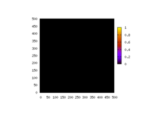
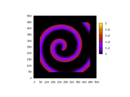

Modelization of electric waves in the heart
Cardiac tissues are prone to electrical instabilities (in the
medical jargon: arrhythmias), one of the main objective of this project
is to understand what causes these instabilities.
|  | |  |
| G_ito=1. | G_ito=1.5 | G_ito=1.7 |
Herebelow
is shown a snapshot of a three dimensional simulation of the electrical
surface potential (left) and zero-isosurface external potential (right).
The simulation is performed on a rabbit heart's ventricle and incorporates the detail of the fiber orientations.
Fiber
orientations are crucial for the model because the waves propagate much
faster along the fibers than in a direction perpendicular to the fibers.
Nowadays due to the availability of large computer facilities, it is feasible to simulate very complex systems like the heart.
I
am currently involved in a project that simulates in the computer the
propagation of the action potential (i.e. the electric wave responsible
of the heart's contraction). The simulations are the results of solving
nonlinear partial differential equations in a complicated geometry.
Ingredients coming from the description of the cells at the
physiological level are needed to close the model, so you need to know
enough Math., Physics, Biology and Computer Science to feel comfortable
with this research project. The interest in getting a numerical
description of the electrical activity of the heart is to understand
the mechanisms responsible to the break up of these electric waves
(instabilities) that lead to heart's failure (i.e. fibrillation states).
You may see a movie of the two dimensional version of the propagating waves (animated GIF, 1.5MB). They are 200 frames in the movie and the time separation between each frame is 2 ms.
Also available is the three dimensional version (animated GIF, 5.4MB). They are 400 frames in this movie and the time separation between each frame is 1 ms.
For this project I am collaborating with the research group of Dr. Flavio Fenton at Cornel University (Ithaca).
Another project related to the heart dynamics is the modelization of the Brugada syndrome.
The Brugada syndrome is associated with an abnormal electrocardiogram (ECG), characterized by an elevation of the ST-segment.
Since
its discovery in 1992, it has gained increasing recognition, and today
is believed to be responsible for 4% to 12% of all sudden deaths
and around 20% of deaths in patients with structurally normal heart.
Herebelow, we show 3D numerical simulations of the heart model where the top left ventricle of the heart is set to parameters
corresponding to a diseased heart with the Brugada syndrome. The rest of the heart is set with the normal (healthy) parameters.
In
the movies, we see the that a spiral is growing in the system (spiral
waves are the precursor of fibrillation states that are usually
leathal).
Brugada movies one view, and second point of view.
For this project I am collaborating with the research group of Dr. Blas Echebarria at the UPC (Barcelona).
This research receives the financial support from Spanish National Projects FIS-2005-06912-C0-02 (2006-2008)
and FIS-2008-06335-C02-02 (2009-2011).